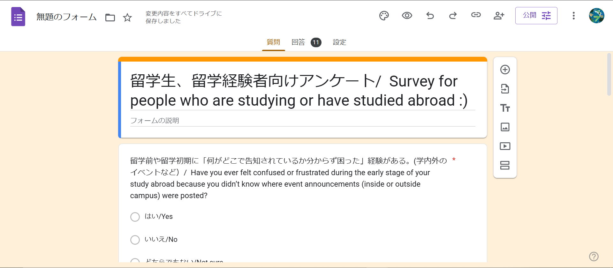
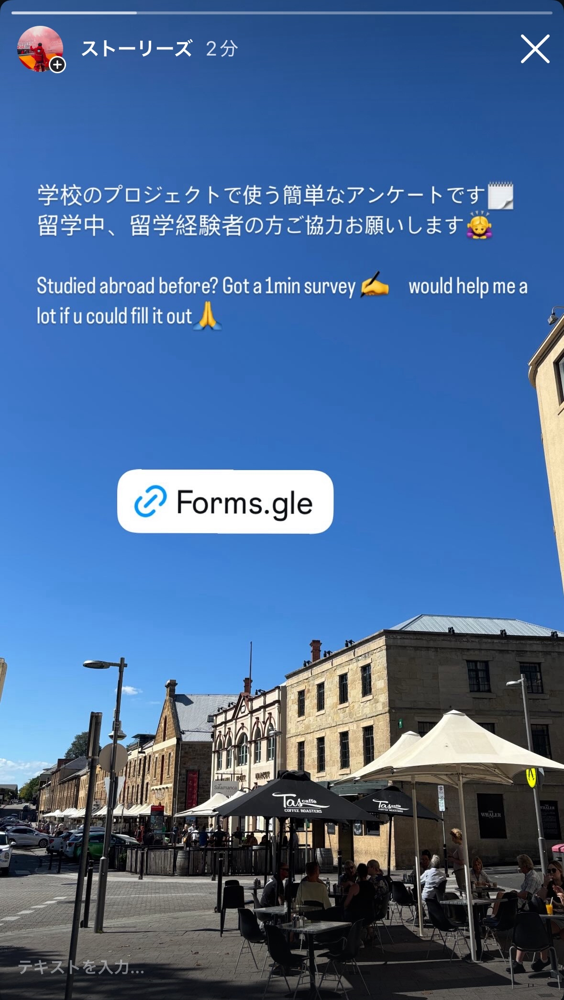

第2回レポート：ユーザー調査の準備
🔷 今回の目的
第1回で定めたビジョンをもとに、実際に留学を経験した方々からリアルな声を集める準備を行った。具体的には、留学生向けのアンケートを設計し、SNSでの呼びかけ文と英訳も作成した。
🔷 実施内容
- ・「はい・いいえ・どちらでもない」で答えられる6問のアンケートを作成
- ・対象者は現在または過去に留学を経験した学生
- ・Instagramストーリーで共有するための呼びかけ文を作成（日本語・英語）
🔷 アンケートの質問内容（全6問）
- 留学前や留学初期に「何がどこで告知されているか分からず困った」経験がある（学内外のイベントなど）
- 学校の先生やスタッフよりも、他の留学生から直接情報を聞きやすい、安心できると感じる
- 渡航先の学校や地域にいる他の留学生と、もっと簡単につながれる仕組みがあれば便利だと思う
- 渡航前にイベント情報やリアルな現地生活のコツなどを知れると、安心感が大きくなると思う
- 言葉の壁が原因で、現地の情報にアクセスしづらいと感じたことがある
- 自分と似た留学生のプロフィールや体験談を見られる機能があれば、役に立つと思う
🔷 アンケートフォーム（ご協力お願いします）
回答はこちらから：
https://forms.gle/jiEXzFxP3zHW9oy4A
🔷 スクリーンショット・作業の様子
以下に今回準備したInstagramストーリーの一部と作業中の様子を示す：
 🔷 次回予定：回答収集と傾向分析
今後はアンケートの回答を20件程度集めることを目標とし、そこからどんな傾向や共通点が見られるかを分析していく。その内容をもとに、実際の機能設計の優先順位を考える予定。